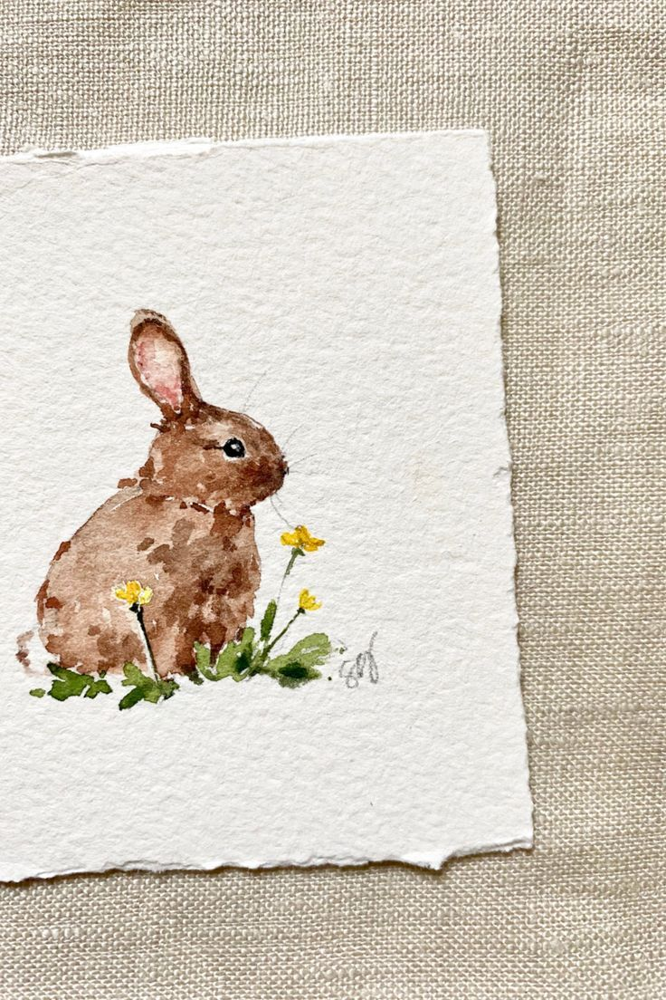

The delicacy of Watercolor:When Water meet colors
Watercolor is one of the most expressive and sensitive painting techniques in the visual arts. Its charm lies precisely in its unpredictability: the way water carries pigment across the paper creates unique, light, and organic effects that can never be repeated in exactly the same way.
This atelier
In this atelier, we celebrate watercolor as a free form of expression, where mistakes become style and simplicity becomes beauty.